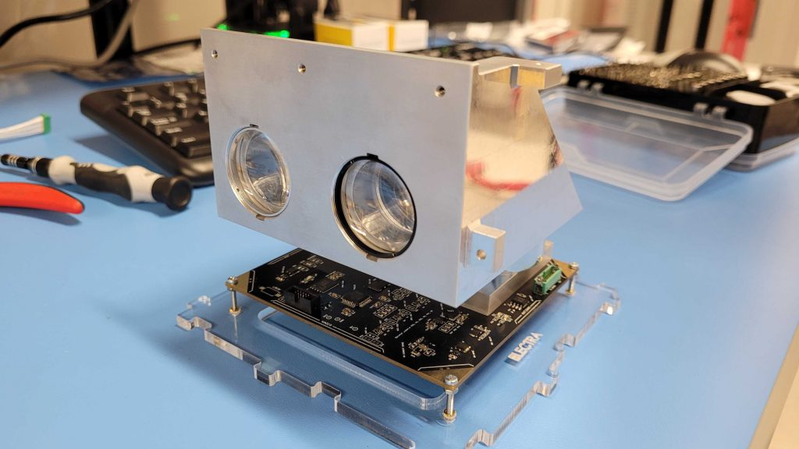

My work on Ex-Alta 3 is the main part of my work as the Mission Design Team lead with AlbertaSat.
Read more about AlbertaSat on my website
here. The Mission Design Team's
main role is to organize objectives and ensure that deliverables are met. My team and I develop important documents
such as the Concept of Operations (ConOps) and the Mission Operation Plan (MOP). Our team also provides the
orbit calculations using STK to ensure deorbit timing meets mission criteria and the proper science can be taken. Read more about
Ex-Alta 3 from the
AlbertaSat Website.

Currently I lead a team of 6 students in designing and determening mission objectives. We meet as a team
weekly to discuss current work and ensure that everyone is on track. I also meet with other team leads weekly
to learn more about what other teams are working on and remain accountable to the projects my team has taken on.
AlbertaSat is a highly interconnected group, with students and supervisors coming from a diverse educational background.
This means that integration, comminication, and working as a team become vital skills that ensure the satellite's success.
Throughout my time with AlbertaSat I have devloped skills such as team work, leadership, communication, and attention to detail.
I have also come to enjoy large projects and putting work into something bigger than I could ever accomplish on my own.
